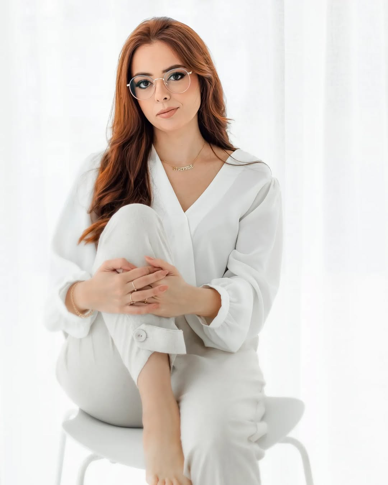

Meus Serviços
Produção de conteúdo, gestão de redes sociais, planejamento de comunicação, redação de textos, criação de campanhas, cobertura de eventos, entrevistas e desenvolvimento de materiais para marcas, empresas e projetos.
Jornalista, radialista e especialista em Marketing Digital. Uno comunicação, estratégia e criatividade ao estudo de Desenvolvimento de Software e Inteligência Artificial para construir projetos relevantes e conectados ao presente.
Saiba mais
Sou jornalista formada pela PUCRS e pós-graduada em Marketing Digital pela Conquer. Atualmente, curso Desenvolvimento de Software pelo Programa SCTEC, iniciativa do Governo de Santa Catarina em parceria com o SENAI/SC, e aprofundo meus conhecimentos em Inteligência Artificial. Minha trajetória une comunicação, criatividade, estratégia e tecnologia.
Produção de conteúdo, gestão de redes sociais, planejamento de comunicação, redação de textos, criação de campanhas, cobertura de eventos, entrevistas e desenvolvimento de materiais para marcas, empresas e projetos.
Comunicação, escrita jornalística e criativa, apresentação, entrevistas, planejamento de conteúdo, marketing digital, inteligência artificial aplicada à comunicação e conhecimentos em HTML, CSS, JavaScript e Python.
Já atuei como social media para grandes marcas, como Alice Salazar, e na equipe de marketing da Hack Empreendimentos, trabalhando com conteúdo, campanhas, eventos e identidade visual. Sou fundadora da Azuri.lab, agência de conteúdo e comunicação estratégica, e atualmente atuo como apresentadora e produtora da Rádio 93 FM, em Sombrio.